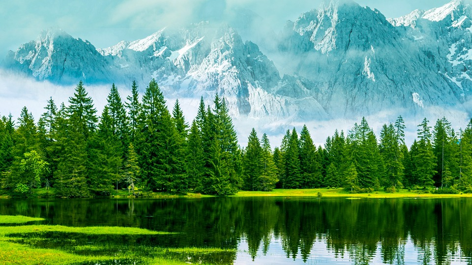
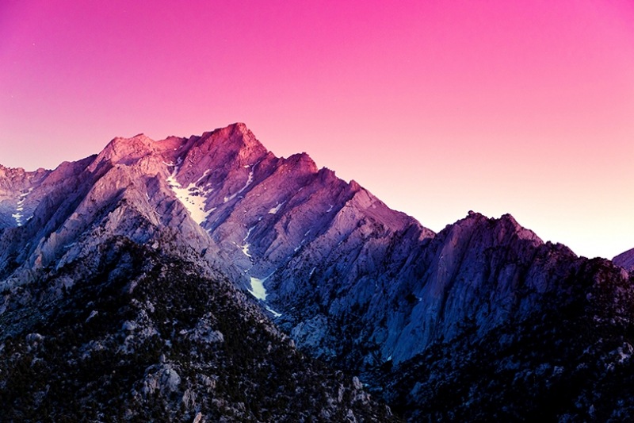

Yazar: Ahmet Yılmaz | Tarih: 23 Mayıs 2025
Doğanın muhteşem güzelliklerini keşfetmek için çıktığımız yolculukta, her adımda yeni bir hayranlık uyandıran manzaralarla karşılaştık. Bu yazıda, doğanın bize sunduğu eşsiz güzellikleri ve bu deneyimden çıkardığımız dersleri paylaşacağım.
Yemyeşil ormanların derinliklerinde, ağaçların arasından süzülen güneş ışınları adeta bir tablo gibi karşımıza çıktı. Yüzlerce yıllık ağaçların arasında yürürken, doğanın kendi ritmi içinde nasıl mükemmel bir denge kurduğuna şahit olduk. Kuş sesleri, yaprakların hışırtısı ve uzaktan gelen bir derenin şırıltısı, şehir hayatının gürültüsünden uzakta bize huzur verdi.
Orman ekosistemi, binlerce canlı türüne ev sahipliği yapıyor. Her bir ağaç, her bir bitki ve her bir hayvan, bu büyük sistemin vazgeçilmez bir parçası. İnsanoğlu olarak bizim de bu dengeyi korumak için üzerimize düşen sorumlulukları yerine getirmemiz gerekiyor.
Zorlu bir tırmanışın ardından ulaştığımız dağ zirvesinde, göz alabildiğine uzanan manzara karşısında söyleyecek söz bulamadık. Bulutların üzerinde, adeta gökyüzüne dokunuyormuş gibi hissettiren bu deneyim, hayatımın en unutulmaz anlarından biri oldu.
Dağların zirvesinde, insanın ne kadar küçük olduğunu ve doğanın ne kadar büyük olduğunu bir kez daha anladık. Günlük hayatın koşuşturması içinde unuttuğumuz bu perspektif, bize hayatın gerçek değerlerini hatırlattı.
Dağların arasında saklı kalmış göller, doğanın bize sunduğu bir başka muhteşem hediye. Durgun suların üzerinde yansıyan dağlar ve ağaçlar, adeta bir ayna görevi görüyor. Bu sakin ortamda, insan kendi iç sesini duyabiliyor ve hayatın anlamını sorgulayabiliyor.
Göl kenarında geçirdiğimiz saatler, bize şehir hayatının stresinden uzaklaşma ve kendimizi yenileme fırsatı verdi. Doğanın bu sakin köşelerinde, modern hayatın bize unutturduğu basit zevkleri yeniden keşfettik.
Doğa gezilerimiz bize sadece güzel manzaralar sunmakla kalmadı, aynı zamanda hayata dair önemli dersler de verdi. Doğanın dengesi, sabrı ve uyumu, günlük hayatımızda da uygulayabileceğimiz değerli prensiplerdir.
Bir sonraki yazımda, doğa fotoğrafçılığı teknikleri ve en iyi doğa rotaları hakkında bilgiler paylaşacağım. Doğa severlerin takipte kalmasını öneririm!
Yorumlar(2)
22 Mayıs 2025
Fotoğraflar gerçekten etkileyici! Hangi kamera ekipmanını kullandığınızı merak ettim. Ayrıca, bahsettiğiniz göllerin tam olarak nerede olduğunu paylaşabilir misiniz?
21 Mayıs 2025
Fotoğraflar gerçekten etkileyici! Hangi kamera ekipmanını kullandığınızı merak ettim. Ayrıca, bahsettiğiniz göllerin tam olarak nerede olduğunu paylaşabilir misiniz?
Doğa Fotoğrafçısı & Gezgın
10 yıldır doğa fotoğrafçılığı yapan Ahmet, Türkiye'nin dört bir yanını gezerek doğal güzellikleri fotoğraflıyor ve deneyimlerini blog yazılarında paylaşıyor.
Profil Tüm Yazıları